Foundations · Autonomous City
Production-bundle visual captures for the Town Center, elevated monorail, chapter transition, and emulated mobile viewports. See metrics.json for browser, layout, and WebGL diagnostics. These captures are inspection evidence, not a browser-test gate.
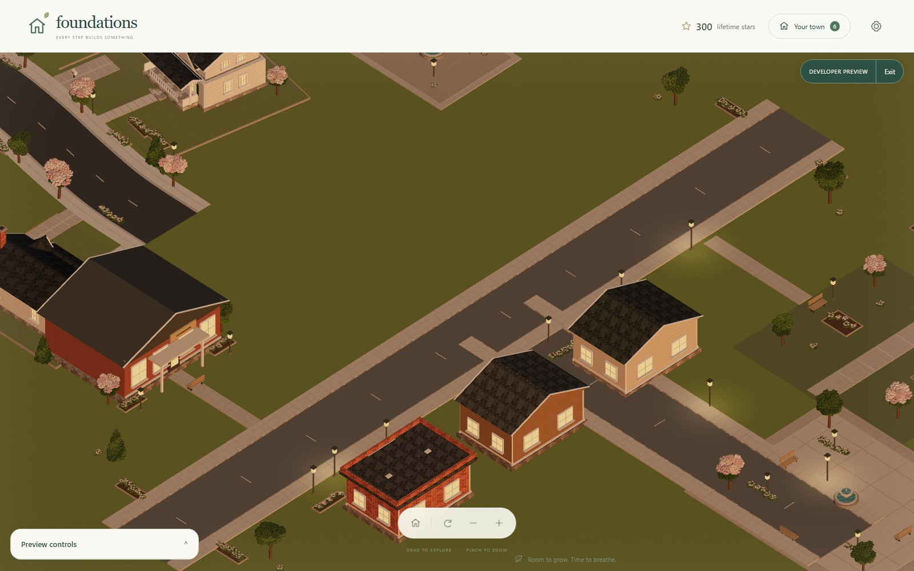
town-center-landscape
Chapter 3 Town Center in the same continuous neighborhood world.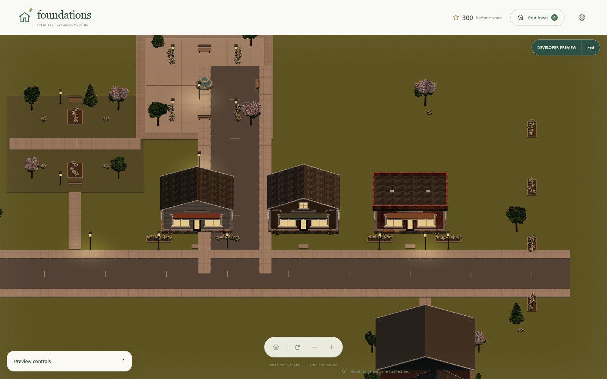
town-center-main-street
Front-facing view of all three distinct Main Street storefronts.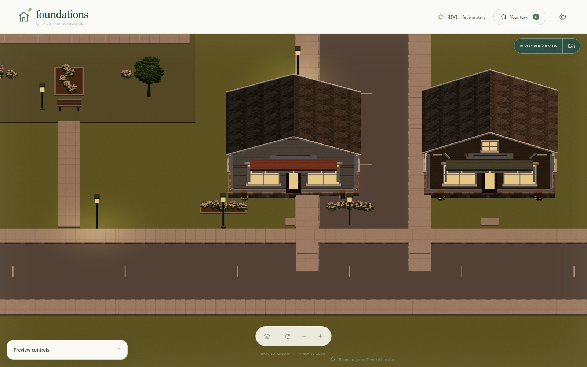
town-center-shopfront
Street-level shop frontage, doors, windows, awning and pedestrian approach.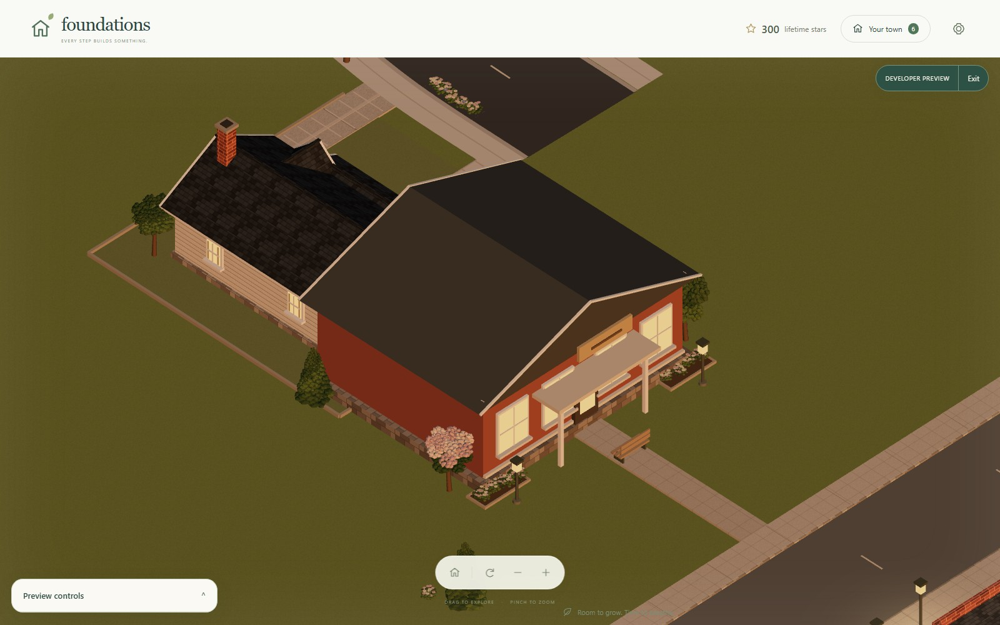
town-center-library
Community Library with its direct sidewalk connection.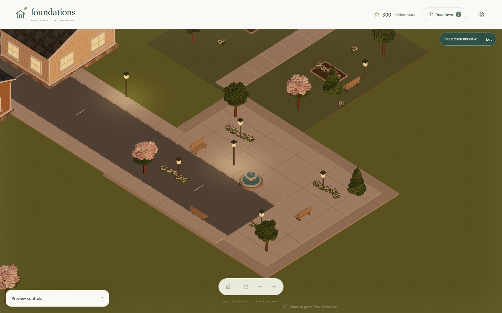
town-center-square
Public square with selected fountain, benches and planted edges.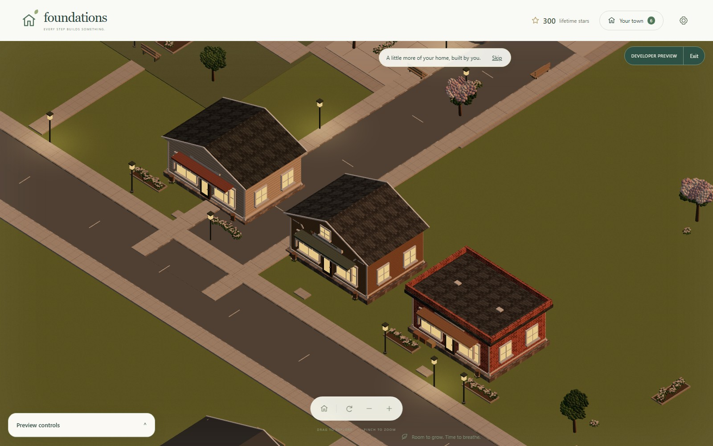
town-center-assembly-mid
Mid-construction state of the Main Street assembly.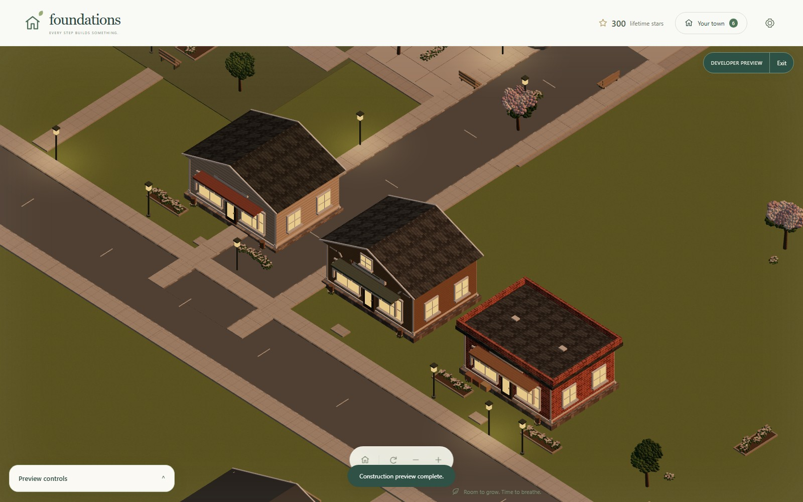
town-center-assembly-skipped
Completed Main Street after skipping its construction animation.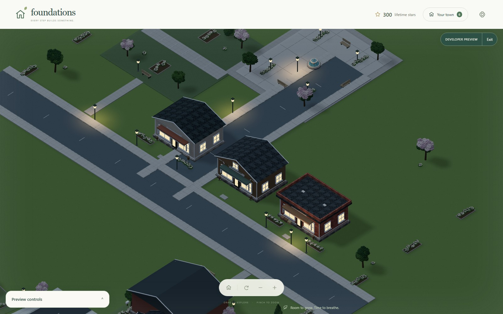
town-center-night
Night lighting on connected storefronts, lamps and windows.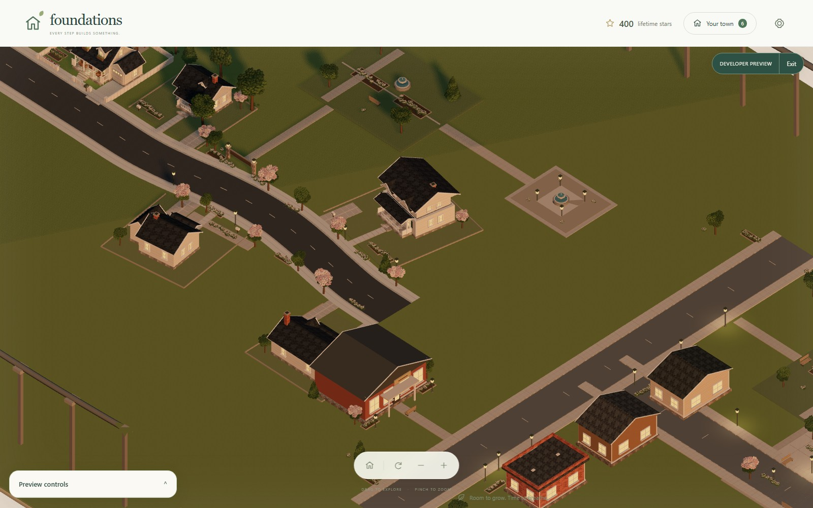
monorail-city-overview
The connected city and elevated loop with both integrated stations.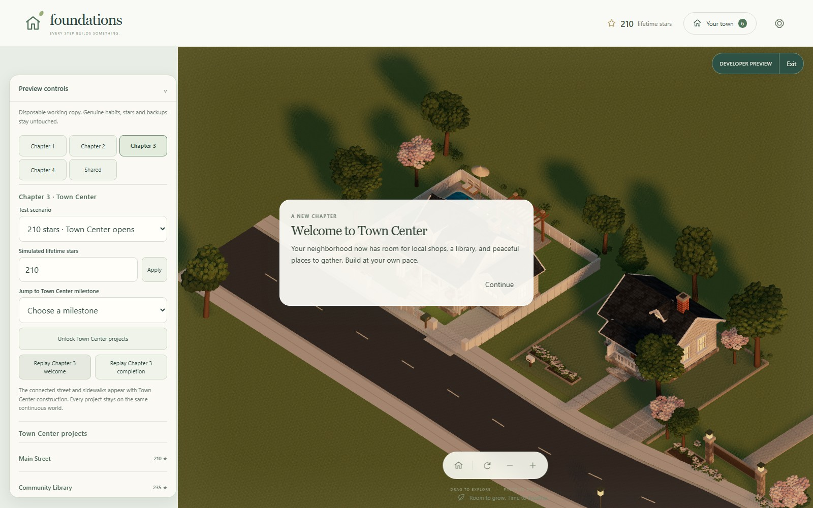
town-center-chapter-transition
Chapter 3 welcome transition shown over the live city.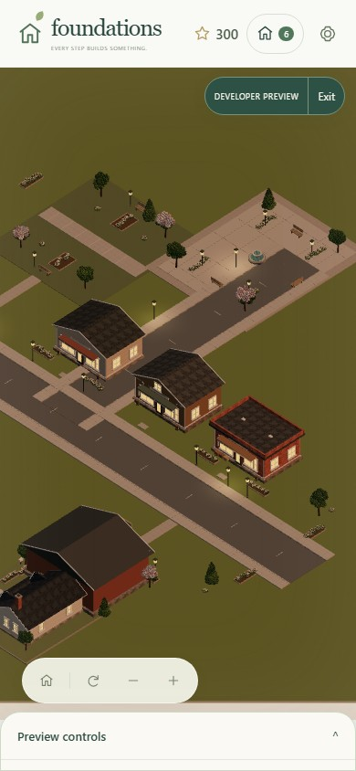
mobile-portrait
town-center scene at emulated portrait viewport.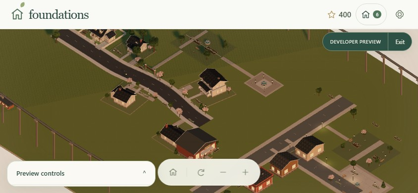
mobile-landscape-mobile
monorail-city scene at emulated landscape-mobile viewport.